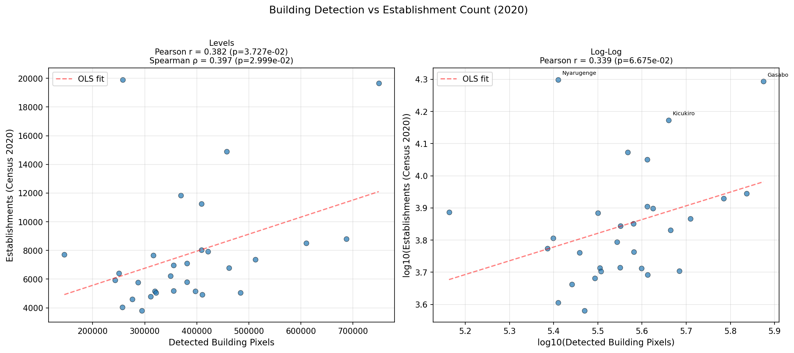
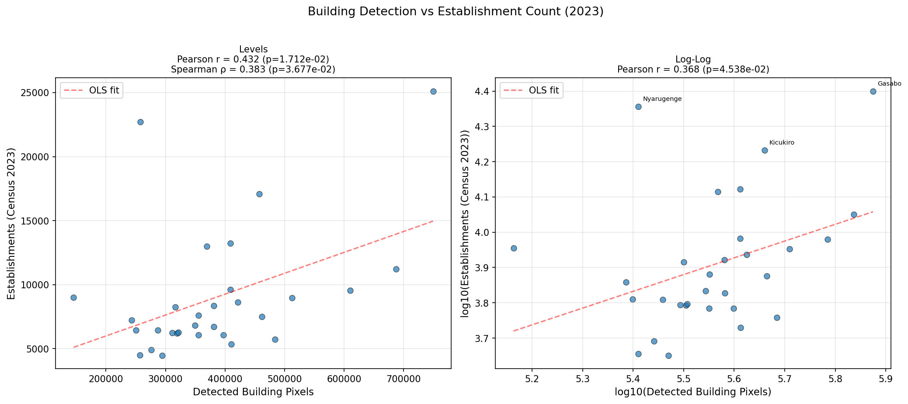
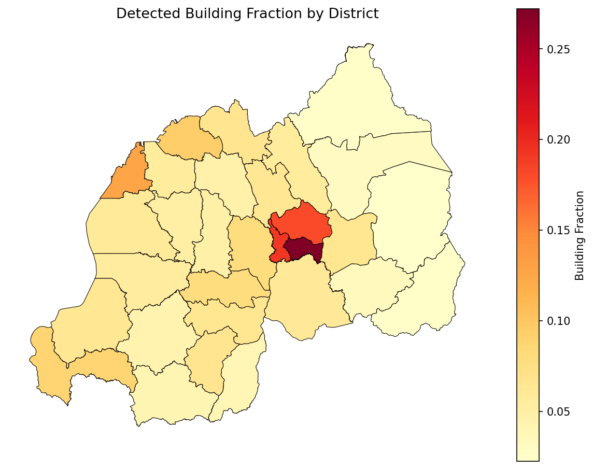
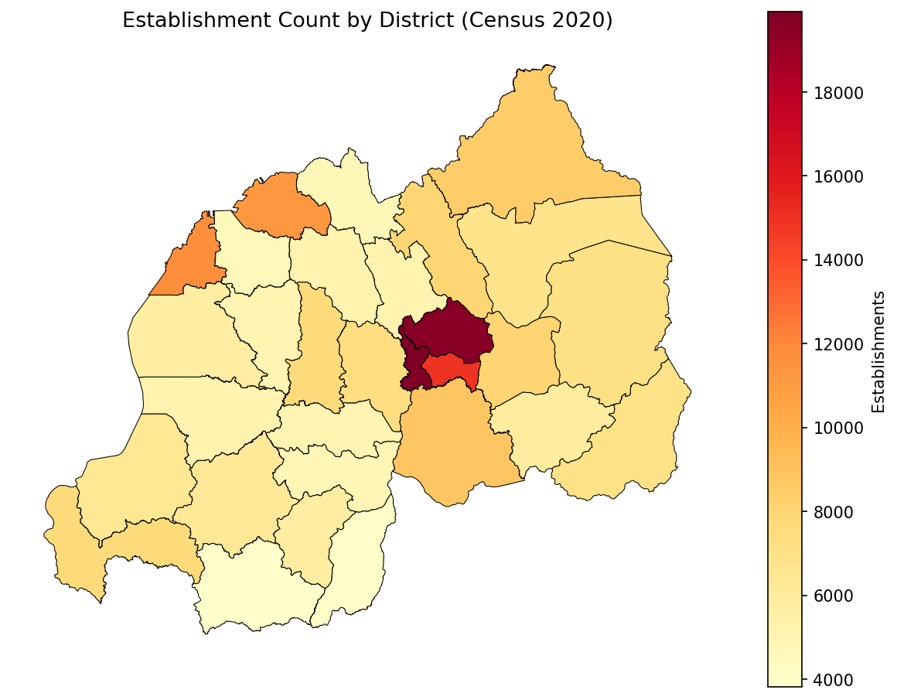
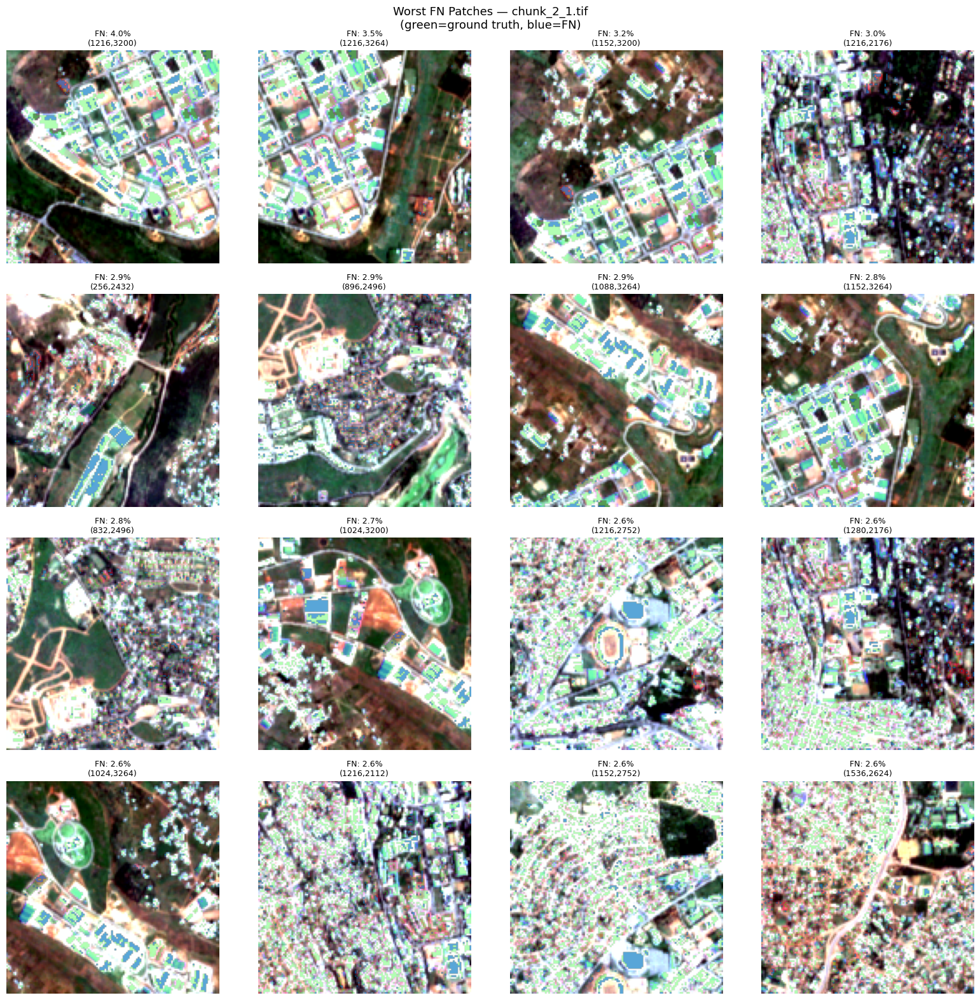
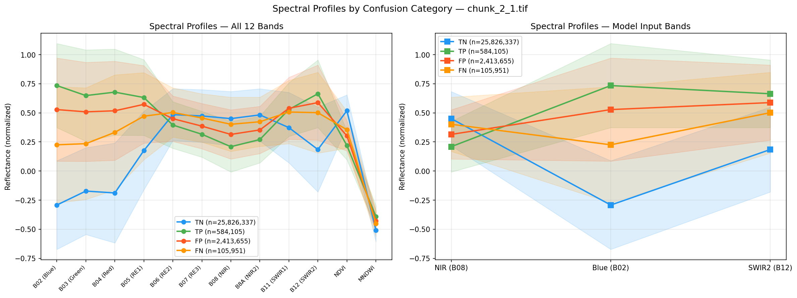
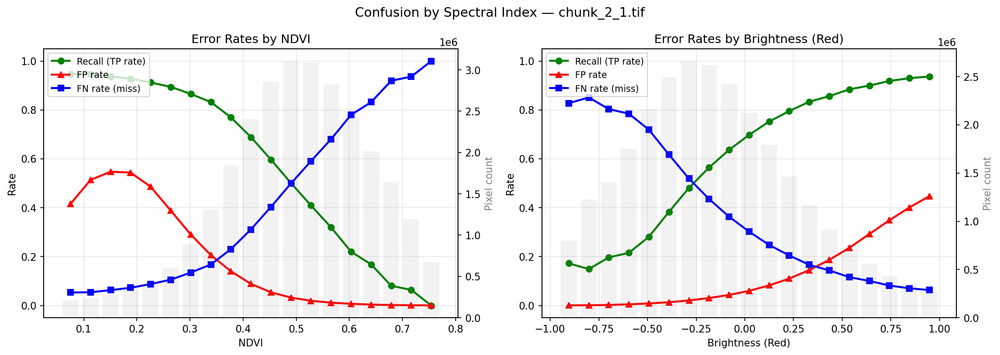

Stage 2: District Validation + Error Analysis
Project A · Progress Report — 2026-03-06
1 Context
This report documents Stage 2 — the first end-to-end test of whether our building detection model produces an economically meaningful signal at the district level. We run the Stage 1b model (AUC=0.976) on all of Rwanda, aggregate predictions by GADM district, and correlate with the Rwanda Establishment Census (2020 + 2023).
We also present the error analysis requested by Sebastian (2026-03-06): where does the model make mistakes, and what spectral features distinguish errors from correct predictions?
For model training details, see Stage 1 and Stage 1b.
2 Full-Country Inference
Model: Stage 1b best.keras (unet_tiny, 6,849 params, NIR/Blue/SWIR2) Input: 20 processed S2 chunks (0.5° grid, 12 bands, data/proc/2022-S2/) Method: Sliding window (128×128 patches, stride 64, 50% overlap averaging) Threshold: 0.90 (optimized in Stage 1b)
| Metric | Value |
|---|---|
| Chunks processed | 20 |
| Total building pixels | 11,518,266 |
| Mean building fraction | 6.40% |
| Max building fraction | 27.2% (Kicukiro) |
| Min building fraction | 2.3% (Kayonza) |
Predictions concentrate in urban Kigali (center) with scattered rural detections — spatially plausible.
3 District Validation
We aggregate predicted building pixels per GADM district (30 districts) and correlate with establishment counts from the Rwanda Establishment Census.
3.1 Correlation Summary
| Comparison | Pearson r | Spearman ρ |
|---|---|---|
| Building pixels vs Estab. 2020 | 0.382 | 0.456 |
| Building pixels vs Estab. 2023 | 0.432 | 0.498 |
| Building fraction vs Estab. 2020 | 0.541 | — |
| Mean probability vs Estab. 2020 | 0.476 | — |
3.2 Scatter: Building Pixels vs Establishments

Interpretation: The positive correlation is driven by Kigali (Gasabo, Kicukiro, Nyarugenge) which correctly shows the highest values on both axes. The relationship is noisy in rural districts where building count and establishment count decouple — many buildings are residential, not commercial.

3.3 Choropleth: Building Fraction by District


3.4 District-Level Table (Top 10 by Establishments)
| District | Province | Building % | Estab. 2020 | Estab. 2023 |
|---|---|---|---|---|
| Nyarugenge | Kigali | 19.29% | 19,906 | 22,704 |
| Gasabo | Kigali | 18.06% | 19,648 | 25,110 |
| Kicukiro | Kigali | 27.19% | 14,883 | 17,070 |
| Rubavu | Iburengerazuba | 12.58% | 11,840 | 13,008 |
| Musanze | Amajyaruguru | 9.41% | 11,248 | 13,240 |
| Bugesera | Iburasirazuba | 5.99% | 8,805 | 11,215 |
| Nyagatare | Iburasirazuba | 2.55% | 8,506 | 9,542 |
| Rwamagana | Iburasirazuba | 6.48% | 8,026 | 9,612 |
| Gicumbi | Amajyaruguru | 5.58% | 7,917 | 8,641 |
| Rusizi | Iburengerazuba | 8.87% | 7,706 | 9,017 |
4 Error Analysis (Sebastian’s Request)
“Show me concrete examples of where the model makes mistakes. Visualize performance, then come up with clever fixes.” — Sebastian, 2026-03-06
4.1 Pixel-Level Confusion (Kigali Chunk)
| Category | Count |
|---|---|
| True Positive | 584,105 |
| True Negative | 25,826,337 |
| False Positive | 2,413,655 |
| False Negative | 105,951 |
| Metric | Value |
|---|---|
| Precision | 0.195 |
| Recall | 0.847 |
| Pixel-level F1 | 0.317 |
| FP Rate | 0.086 |
The pixel-level precision (0.195) is much lower than the patch-level training metric (0.951). This is expected — the model was trained on patches centered on buildings (positive sampling), and Open Buildings labels mark exact footprints while the model detects broader built-up areas.
4.2 False Positive Gallery

Key finding: Most “false positives” are actually roads, bare soil, parking areas, and urban fabric surrounding labeled buildings. These are genuinely built-up areas that Open Buildings (which only labels rooftops) doesn’t capture. This is a label limitation, not a model failure.
4.3 False Negative Gallery

False negatives tend to be small, isolated buildings in vegetated areas where the 128×128 patch context is dominated by vegetation.
4.4 Spectral Profiles: What Distinguishes Errors?

Critical finding: In the 3 model bands (right panel), FP and TP have nearly identical spectral signatures. The model literally cannot tell them apart with these bands alone. However, in the full 12-band plot (left panel), NDVI (band 11) clearly separates the categories — FPs have higher NDVI than TPs.
4.5 Confusion by NDVI and Brightness

The NDVI plot tells the clearest story:
- Low NDVI (bare/urban): High recall (~90%) but high FP rate (~50%) — the model detects almost everything non-vegetated
- High NDVI (vegetation): Low FP rate but high miss rate — the model correctly ignores vegetation but misses buildings hidden under canopy
This is exactly what an NDVI input band would fix.
5 Diagnosis: Why r = 0.38
The correlation is positive and statistically significant (p < 0.04), but below our target of r > 0.7. Three factors explain the gap:
Building count ≠ economic activity. Our model detects physical structures. A rural district with many scattered houses has lots of building pixels but few businesses. Kigali has dense commercial activity packed into fewer (but larger) buildings. Building count is a proxy for settlement extent, not economic intensity.
Label broadening. At threshold 0.90, the model detects built-up areas (roads, bare soil, construction) beyond just rooftops. This inflates pixel counts in arid/cleared districts relative to forested ones, decoupling from establishment counts.
No area normalization. Raw building pixel count scales with district area. Eastern districts (Nyagatare, Bugesera) are large and rank high on building pixels despite moderate establishment density.
6 What We Learned
6.1 1. Binary Detection Has a Correlation Ceiling
Building count correlates with economic activity (r = 0.38) but has a natural ceiling around r ≈ 0.5. The reason is fundamental: binary detection measures settlement extent (how much land is covered by buildings and their surroundings), not economic intensity (how much activity happens per unit of settled area). Two districts with identical building coverage can have very different economic output — Kigali’s commercial districts vs. rural areas with dispersed homesteads.
Breaking through r > 0.7 requires either a regression head predicting intensity (establishments per pixel, trained on GPS-coded census data) or multi-source fusion (nightlights for intensity + daytime for extent).
6.2 2. The Model Detects Settlements, Not Buildings
The high FP rate against Open Buildings labels is misleading. The model detects the broader built environment — including roads, cleared land, and infrastructure around buildings. For economic mapping, this is arguably more useful than individual building footprints, because economic activity happens in the spaces between buildings (markets, roads, commercial strips), not only inside buildings.
6.3 3. Spectral Limitations Are Predictable
The spectral analysis confirms a prior that should guide feature engineering: if two classes are indistinguishable in the input feature space, no amount of training will separate them. FP and TP pixels overlap in NIR/Blue/SWIR2. The fix is not more training data or a larger model — it is more informative input bands. This is a feature engineering problem, not a model capacity problem.
6.4 4. NDVI Gradient Maps Directly to Error Gradient
The monotonic relationship between NDVI and FP rate means NDVI is not just “helpful” — it is the primary missing discriminant. Adding it as a 4th band is the single largest improvement available without changing labels or architecture.
6.5 5. Building Fraction Outperforms Raw Count
Building fraction (r = 0.541) already beats raw building pixel count (r = 0.382) without any retraining. This confirms that district area was a confound. Always normalize by area in future district-level analyses.
7 What to Try Next
7.1 No retraining needed:
- Establishment density (per km²) to normalize both sides
- Exclude Kigali to check rural-only correlation (Kigali dominates as leverage point)
- Mean probability as predictor (r = 0.476, already better than raw count)
7.2 Model improvements:
- Add NDVI as 4th input band — the error analysis shows this is the strongest FP/TP discriminator
buildingsALLon Quest (10-band unet_medium) — tests full spectral information- Water index (MNDWI) for lakeside districts
7.3 Strategic:
- The ceiling for building detection → establishment count may be ~r ≈ 0.5. Reaching r > 0.7 likely requires the regression head (Stage 3) trained on actual GDP/sales data from Peru. Buildings alone proxy settlement size, not economic productivity.
8 Updated Project Summary
| Stage | Status | Key Result |
|---|---|---|
| Data download + preprocessing | Done | 20 Sentinel-2 tiles, Open Buildings raster |
| Stage 1: Building detection baseline | Done | AUC = 0.930 |
| Stage 1b: LR fix | Done | AUC = 0.976, F1 = 0.974 |
| Stage 2: District validation | Done | r = 0.382 (raw), r = 0.541 (fraction) |
| Stage 2b: NDVI as 4th band | Next | Target: reduce FP rate, improve r |
| Stage 3: GDP regression head | Blocked | Needs Peru GPS data |
| Stage 4: Global application | Future | After Stage 3 |
9 Code and Reproducibility
Inference: python src/inference/01_predict_rwanda.py (all 20 chunks, ~2h on CPU)
Aggregation: python src/inference/02_aggregate_districts.py
Error analysis: python src/diagnostics/error_analysis.py --chunk chunk_2_1
Outputs:
out/predictions/buildingsNIR-Rwanda2022-1b/— 20 probability GeoTIFFsout/diagnostics/district_validation/district_validation.csv— per-district statsout/diagnostics/error_analysis/figures/— FP/FN galleries, spectral profiles, NDVI confusion